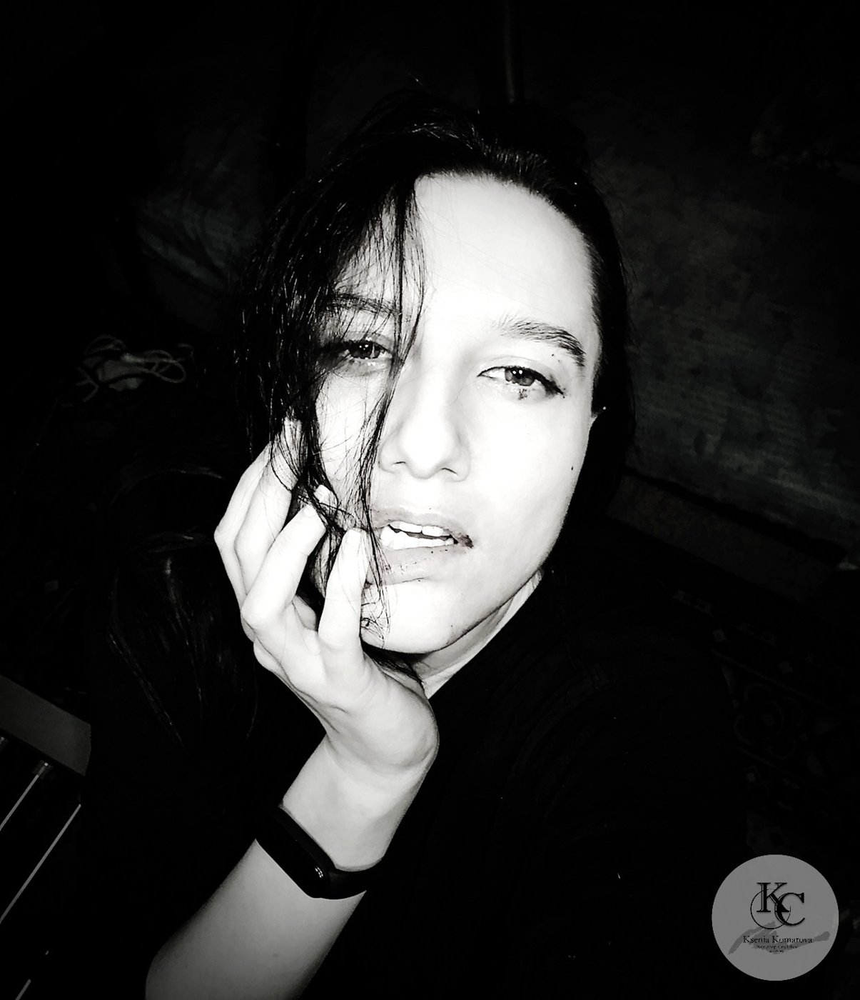

2021Международная выставка
Центр искусств «Art коробка», ТРЦ «Ривьера»
Международная выставка «ART ANTIDOT 2»; Москва
Подробнее ↗Живопись · Москва
Масло и акварель. Символизм, экспрессионизм, импрессионизм, абстракция.

Нажмите на работу, чтобы увидеть её крупно.
Портрет старой женщины: глубокие морщины, тяжёлый внимательный взгляд и белые пряди, которые падают на лицо, как занавес. Масло лежит плотными рельефными мазками, и вблизи лицо разглядываешь как карту. Возраст здесь не прячут и не приукрашивают.
Пьеро в чёрной шапочке и высоком воротнике, на щеках чёрные дорожки слёз. Светлое лицо будто светится на тёмном, дымном акварельном фоне. Название с латыни значит «печаль», и показана она прямо и спокойно, без театральности.
2020 год: пандемия, карантин, маски, пустые улицы и ощущение чужого, замершего города. В центре девочка в защитной маске, в её фигуре страх перед будущим и растерянность: как жить дальше. Но светло-голубое платье, хоть и испачканное, оставляет надежду, что всё пройдёт.
Три пары рук с раскрытыми пальцами на глубоком сине-бирюзовом фоне, между ними тонкие линии, словно что-то невидимое их соединяет. Акварель оставляет много воздуха и света. На эти руки можно смотреть долго, пытаясь прочитать жест.
Колесо сансары здесь не золотое и не парадное, а простое колесо телеги, увязшее в грязи, боли и страхе этого мира. Но оно движется и тянет всё это за собой, а в конце пути ждёт просвет и золото солнца. Работа показывалась на онлайн-проекте New Era.
Участвовала в выставкеНочной пейзаж: луна пробивается сквозь облака, на воде холодные синие и серебристые блики, вдали тёмная гора. Масло передаёт и движение воды, и тяжесть неба. В картине много тишины и простора.
Девушка с бледным серьёзным лицом, к её плечу прижалась сова, а вокруг тёмные крылья. Приглушённая зелёно-серая гамма делает сцену тихой и камерной. Взгляд героини спокоен, и от этого соседство с птицей выглядит доверчивым.
Женщина склонила голову, на ней яркая жёлтая накидка, а за спиной большой круг с золотой поталью. Золото блестит по-разному в зависимости от света, поэтому картина немного меняется, пока идёшь мимо. Вопрос из названия остаётся открытым, и каждый отвечает на него по-своему.
Девушка с растрёпанными волосами и ясным, прямым взглядом, в нижнем углу тёмные грибы. Акварель в мягких серо-сиреневых тонах, с прозрачными переходами. Образ тихий и немного дикий.
Фигура в клювастой маске чумного доктора, в руке горящий фонарь, на плече синий ворон. Тёплый свет фонаря собирает на себя всё внимание на холодном розово-сером фоне города. Образ родом из эпох чумных эпидемий, написанный в ярком современном цвете.
Участвовала в выставкеЧетыре розовых фламинго стоят в сине-зелёной воде, над ними бледное солнце. Акварель лёгкая и прозрачная, розовое будто светится на глубоком фоне. Небольшая работа, которую приятно рассматривать близко.
Абстракция, написанная мастихином: пастельные розовый, зелёный и жёлтый и светлый центр, от которого расходятся резкие штрихи. Много рельефа и мазков, поэтому её лучше смотреть крупно. Название с латыни переводится как «образ».
Я архитектор маленьких миров. Соединяю рисунок и IT: в живописи ищу образ, в работе с данными и автоматизацией строю системы, и в обоих случаях меня занимает одно и то же: как из смысла и вдохновения собрать устойчивую форму.
Родилась и живу в Москве. Рисовать начала в изостудии «Планета молодых» под руководством А. А. Соловьёва (член СХ СССР с 1985 г.): направление «художественно-графический рисунок», 2005 год.
Основные материалы: холст, бумага, масло и акварель. Техники: алла прима, импасто, традиционная, а в ряде работ мастихин. Направления, в которых я работаю: символизм, экспрессионизм, импрессионизм и абстракция. Постоянно ищу новые формы и добавляю в работы что-то новое.
Учусь и сейчас. В 2025 году прошла курсы «Академический рисунок» и «История изобразительного искусства» (Пентаскул), арт-терапию (НИИДОПО), основы Adobe Photoshop (Нетология). В 2026 году добавились переподготовка «Преподаватель изобразительного искусства и черчения», программа «Менеджмент в сфере культуры и искусства», курс «Авторское право для дизайнера» (НАРХСИ) и мини-курс по дизайну и нейросетям (Formfactor).
С 2017 года участвую в конкурсах и выставках в Москве и онлайн: от конкурса «Битва художников» до персональных выставок 2021 года и международных онлайн-проектов (список выставок отдельно). Развиваю проект «Мастерская-Колыбель»: маленькие миры, символы и тёплые предметы.
Почта: ru-2006kc@yandex.ru · Telegram: @ru2006kc
География участия: Москва, Лондон и Афины (онлайн-проекты).
Международная выставка «ART ANTIDOT 2»; Москва
Подробнее ↗Онлайн-выставка project 'New Era'; Лондон, Афины
Подробнее ↗Персональная выставка; Москва
Подробнее ↗Персональная выставка, апрель; Москва
Подробнее ↗Персональная выставка, март; Москва
Подробнее ↗Bidspirit; Москва
Подробнее ↗Bidspirit; Москва
Подробнее ↗«Экологический кризис»; Москва
Подробнее ↗«Выставка 25 молодых художников»; Москва
Подробнее ↗Конкурс «Pebeo mixed media»; Лондон
Конкурс стикеров; Москва
Москва